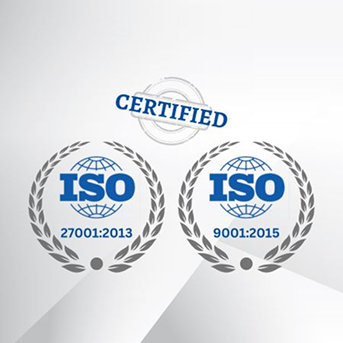
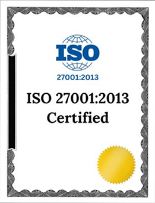
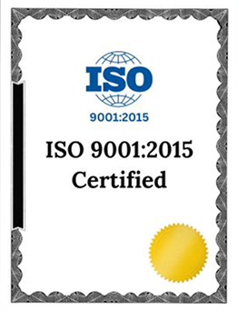

At People Prime, we are committed to maintaining the highest standards of quality and information security. our compliance framework for ISO 9001:2015 (Quality Management) and ISO 27001:2022 (Information Security Management systems) standards to ensure consistent delivery of high-quality services and robust protection of information assets. By adhering to these compliance guidelines, we deliver exceptional IT staffing services while protecting the integrity and confidentiality of our information assets. Our integrated approach to quality and information security management underscores our dedication to excellence and trust.
People Prime is dedicated to maintaining and improving information security within our practices, minimizing exposure to data security risks for both our organization and our stakeholders. Our Information Security Management System (ISMS) aligns with the ISO 27001:2022 standard to ensure the following:


Information Security Objectives : Establish specific, measurable objectives for information security aligned with organizational goals. Regularly monitor, review, and update these objectives to address evolving threats and business needs.
Confidentiality : Information is only accessible to authorized persons from within or outside the company. We maintain the confidentiality of information to protect sensitive data from unauthorized access.
Risk Assessment and Treatment : Regularly assess information security risks to identify, evaluate, and prioritize them. Implement appropriate controls and treatment plans to mitigate identified risks.
Incident Management : All breaches of information security and suspected weaknesses are reported and investigated. We have a clear process for managing and responding to information security incidents.
Compliance and Legal Requirements : All personnel are trained on information security and are informed that compliance with the policy is mandatory. Procedures exist to support the policy, including virus control measures, passwords, and continuity plans.
Training and Awareness : Provide ongoing training and awareness programs to educate employees about information security policies, procedures, and best practices. Foster a security-conscious culture across the organization.
Compliance and Legal Requirements : All personnel are trained on information security and are informed that compliance with the policy is mandatory. Procedures exist to support the policy, including virus control measures, passwords, and continuity plans.
Documentation and Records : Maintain comprehensive documentation and records to demonstrate compliance with ISO 27001. Ensure all documents are controlled, regularly reviewed, and easily accessible to relevant personnel.
Policy Statement : People Prime Worldwide is dedicated to delivering superior IT staffing solutions by implementing a Quality Management System (QMS) in line with ISO 9001: 2015 standards.
Quality Objectives : Establish clear, measurable quality objectives aligned with our strategic goals, and continuously monitor and review these objectives to ensure their relevance and effectiveness.
Customer Focus : We prioritize understanding and meeting the needs of our customers, ensuring their requirements are consistently met and their satisfaction is maintained.
Leadership :Our leadership is committed to establishing a clear vision and direction, fostering an environment where employees are encouraged to excel and contribute to the organization's goals.
Process Approach : We manage our activities and resources as interrelated processes that function as a cohesive system, enhancing efficiency and achieving desired outcomes.
Improvement : We are dedicated to continually improving our QMS, processes, and services. We regularly review our performance, set objectives for improvement, and implement necessary changes to enhance our operations.
Evidence-Based Decision Making : Decisions within our organization are based on the analysis of data and information to ensure accuracy and effectiveness.
Relationship Management : We strive to build and maintain mutually beneficial relationships with our suppliers and partners to enhance the overall performance of our organization.
People Prime is committed to delivering high-quality services while maintaining robust information security. Our Integrated Management System (IMS) is designed to meet the requirements of ISO 9001:2015 and ISO 27001:2022, ensuring continuous improvement, customer satisfaction, and protection of information assets.
Customer Satisfaction and Quality Assurance : Ensure customer satisfaction by consistently delivering high-quality services and products. Maintain compliance with applicable legal, regulatory, and customer requirements. Enhance the skills and knowledge of employees through ongoing training and development programs.
Information Security and Risk Management : We Protect the confidentiality, integrity, and availability of information assets. Manage and mitigate information security risks through regular risk assessments and implementation of appropriate controls. Ensure that all breaches of information security and suspected weaknesses are reported and investigated promptly.
Continuous Improvement and Process Optimization : Continuous Improvement and Process Optimization : Foster a culture of continuous improvement by regularly reviewing and improving our processes and systems. Using data-driven decision-making to enhance efficiency and achieve desired outcomes.
Compliance and Governance : Ensure that procedures exist to support the IMS, including virus control measures, passwords, and continuity plans. All managers are directly responsible for implementing the IMS within their areas of control.